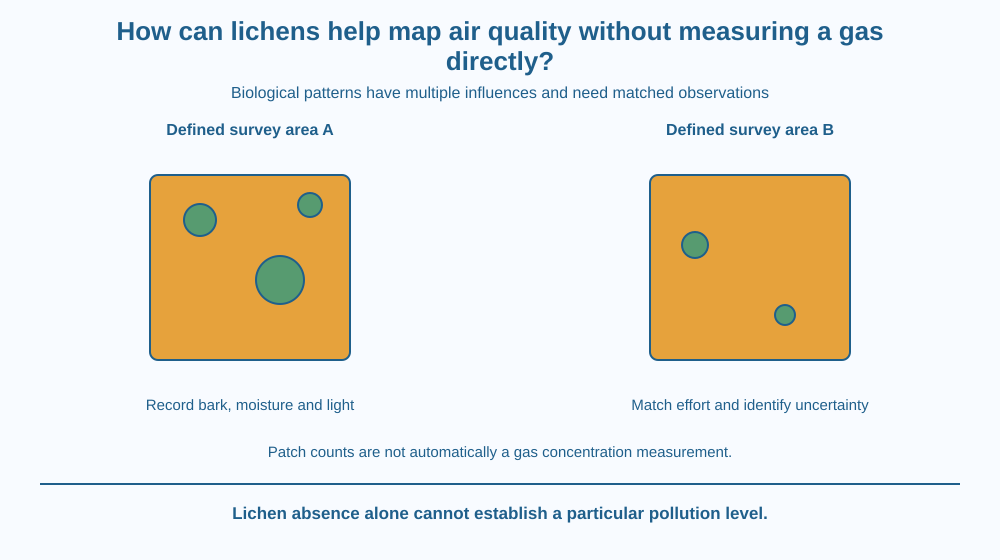

Explain how lichen observations can act as bioindicators of environmental conditions. Distinguish an organism's response from a direct gas-concentration measurement. Design a habitat-aware comparison that avoids calling every lichen-free surface polluted or every lichen-covered surface clean.
Two groups survey lichens on trees at different sites. One finds fewer kinds at a roadside location. The group immediately announces a precise pollution level, but it has not measured a gas or checked whether the trees and moisture conditions are comparable.
Lichens can provide useful biological evidence, yet the inference needs care. Their presence reflects responses to surroundings over time and to more than one condition.
The question is how to use that evidence without turning an indicator into a direct instrument it is not.
A bioindicator is an organism or biological response used to provide information about environmental conditions. It can reveal effects integrated over time rather than one instantaneous physical reading.
Lichens are close fungal-photosynthetic associations, as explained in an earlier lesson. Here we treat that identity as background and focus on how observed abundance or community composition can relate to environmental exposure.
Some lichens are sensitive to particular air pollutants, including sulphur dioxide in well-studied settings. Other kinds tolerate conditions differently. A survey based on identified groups can therefore provide more information than simply counting every coloured patch as equivalent.
However, habitat factors also influence occurrence. Bark properties, moisture, light, surface age and disturbance can change what grows. A dry young surface and a moist old trunk are not automatically fair comparison sites.
An observed difference can therefore have several possible causes. A careful design matches or records relevant habitat conditions and uses a consistent observation method. Otherwise habitat variation can be mistaken for an air-quality signal.
Sampling consistency matters. Compare defined areas, similar viewing effort and appropriate identification methods. Different observers can miss small patches or classify them differently. A protocol should record uncertainty rather than force every unknown patch into a confident species name.
A lichen survey does not directly output a gas concentration in parts per million. Linking biological patterns to particular exposures requires suitable local evidence and calibration. A simple school map should be labelled as an observation or indicator map, not a certified pollution measurement.
The absence of lichens alone is not proof of polluted air. Their presence alone is not proof that every pollutant is absent. Bioindicators complement other evidence; they do not erase the need for appropriate direct monitoring when a specific concentration or safety question must be answered.
Draw several arrows pointing toward a lichen-observation box: air exposure, moisture, bark and light. A change in the output could reflect one or several inputs.
Now match the habitat arrows as closely as possible between sites while keeping the air-exposure question open. This shows why controlling the comparison can make the indicator more interpretable without claiming every alternative cause is eliminated.
Add a separate direct-sensor box. It answers a different question with its own limits. The two evidence routes can support a broader assessment, but they should not be given identical units or described as the same type of measurement.
The SVG compares defined survey patches on two similar tree surfaces. Habitat-check symbols accompany the lichen observations, and a separate panel identifies a direct gas measurement as a different evidence type.
Arrows show multiple influences rather than a one-arrow equation from pollution to no lichens. The diagram records unknown identification where appropriate and does not assign a numerical pollution score.
The illustration does not repeat the nutritional exchange inside lichens. Its purpose is indicator reasoning, survey fairness and the distinction between biological response and direct concentration measurement.

Environmental surveys can combine biological observations with physical monitoring. In an Indian school project, photographs from approved public locations can support a careful comparison without making claims about a neighbourhood's safety from a few trees.
A roadside location can differ from a park in surface management, shade and moisture as well as traffic exposure. Recording those differences is part of the science, not an inconvenient distraction from a preferred conclusion.
Do not scrape lichens from bark or stone, enter roadsides with traffic risk or label a private site polluted publicly based on this exercise. Distant photographs or supplied images are sufficient for learning the method.
Use two supplied tree photographs or draw two survey surfaces. No field collection is needed.
Keep the hypothesis separate from a measured concentration. The images may lack enough information for a strong environmental inference. An honest unknown is more useful than assigning a precise number the activity never measured.
Why can an organism's condition reflect a longer exposure history than a sensor reading taken at one instant? Explain the potential value without claiming the organism records every pollutant equally.
Now suppose the two sites have different tree species and bark ages. What would you change before interpreting their lichen differences mainly as pollution evidence? The comparison design determines how much the indicator can reasonably support.
What is a bioindicator?
Answer: B — Bioindicators use organisms or their responses to provide information about conditions.
Why compare similar habitats in a lichen survey?
Answer: C — Moisture, bark and light can alter observations independently of the exposure of interest.
A surface has no visible lichens. What follows from that observation alone?
Answer: A — Absence can reflect habitat or other conditions and does not by itself establish pollution.
Design a survey card with site conditions, defined area, observer effort, identification confidence and lichen observations. Include a separate box for any direct monitoring data supplied by a reliable source.
Write a cautious conclusion that does not convert patch counts into an invented gas concentration. Your plan must identify at least one habitat confounder and one reason a lichen-free surface alone cannot establish that the air is polluted.
An indicator can be valuable precisely because it responds biologically rather than copying a direct instrument. It may integrate effects over time, but that strength comes with interpretive limits. Understanding what the indicator responds to is therefore more important than treating its presence as a universal green light or its absence as an automatic alarm.
Lichen patterns can indicate environmental responses, but habitat, species and method must be considered before relating them to air exposure or direct gas measurements.